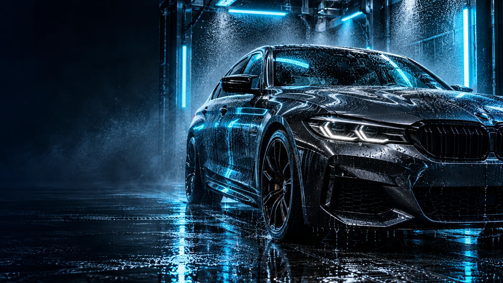
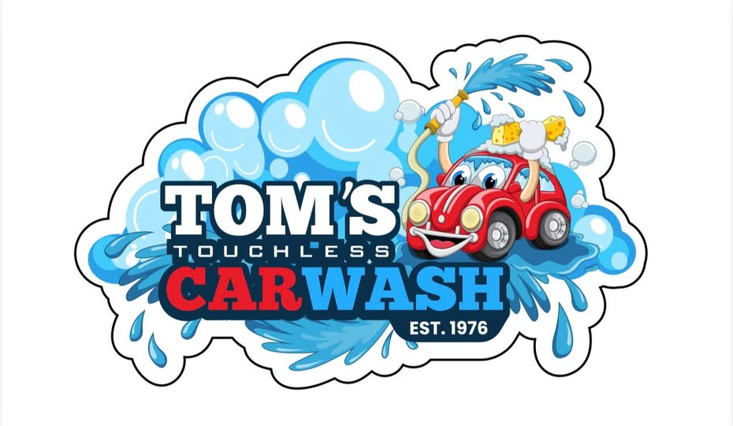

Express
$9 / wash
The everyday refresh.
- Undercarriage wash
- Wheel & rocker panel blaster
- 2-step heated presoak
- High-pressure wash
- Spot-free rinse

Big shine. No brushes. Your neighborhood touchless and self-serve car wash, ready whenever you are.
Four touchless washes. One easy stop.
Choose your level of shine and let the water do the work.
The everyday refresh.
A clean finish. Extra shine.
More care in every pass.
Our complete touchless wash.
Let our automatic wash handle the outside, or take your time with the tools to make it your own.
A thorough exterior wash without spinning brushes or cloth. Four packages, from a quick refresh to our complete finish.
Find your washFour bays. Hot water and hot wax. A hands-on clean at your pace.
Seven vacuums plus self-service shampoo and spot-removal tools.
Vending supplies, fragrance and air to finish your clean.
Plan your visit

Since 1976, Tom’s has been part of the Royersford routine. A place to rinse off the week, take care of your car, and get back to what’s next.
Family operated. Equipment that keeps evolving.
The same commitment to our neighborhood.
See what’s happening at Tom’s, hear from other drivers, or get in touch directly. There are real people behind the wash.
Feedback from local drivers, shared directly on Google.
11 reviews·4 photos
7 months ago · as shown in the source
This is what $16 in the automated washer gets you. Car still completely filthy. Clearly the owner is using the cheapest products you can buy. No reason for an entire layer of dirt to be on my car. Will never be back.
2 review photo reference(s) in the source; images were not supplied.
7 months ago · as shown in the source
jackson. We are literally using the most expensive chemicals they make, arcadian. they clean and shine better than anything we’ve tried yet. we don’t get reviews like this too often so there something going on , we are looking into it right now. we are always happy to refund and get your car clean. update: thank you again for your review because it turns out one of our pre-soak lines had a foot valve come off of it so it was not getting any low pH on your vehicle which is 100% why your vehicle is not clean. This must’ve happened halfway through the day so again we would love for you to come over and we will get that car clean for you! 484-948-1243
Local Guide·19 reviews
Edited 4 months ago · as shown in the source
Reasonable price Touchless ultimate wash did a very good job of cleaning my SUV. Tap to pay was also a convenient plus. I'll be back if I'm in the area.
View Tom’s reviews on Google Maps ↗Local Guide·513 reviews·948 photos
2 years ago · as shown in the source
I don't use manual car wash bays often, so I'm not sure how this place compares. Since I feel neutral, I'll give it five stars. Try it for yourself. I'll have to try the touchless auto bay next.
2 review photo reference(s) in the source; images were not supplied.
View Tom’s reviews on Google Maps ↗Explore Wash Club rewards, special pricing and birthday washes.
A little know-how makes for a better wash.
All your questions, answeredYes. The automatic bay uses water pressure and wash chemistry without brushes or cloth contacting your vehicle. The self-serve bays are a separate, hands-on option.
No appointment is needed for the automatic or self-serve wash. Visit any time: Tom’s is open 24 hours a day, seven days a week.
Yes. Self-service vacuums and interior-care equipment are available, including shampoo and spot-removal options. These are tools you use yourself; staffed interior detailing is not advertised.
Ultimate includes Mirror Carnauba Ceramic Protection as part of the automatic wash. It is a wash-applied treatment, not a professionally installed, multi-year ceramic coating.
No appointment. Just pull in.
Touchless automatic · Self-serve bays · Vacuums